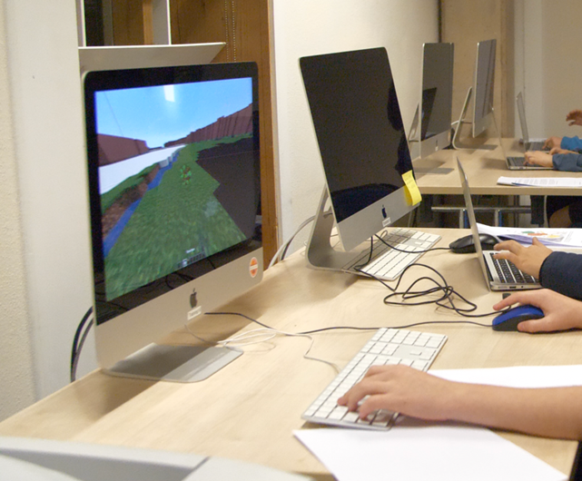
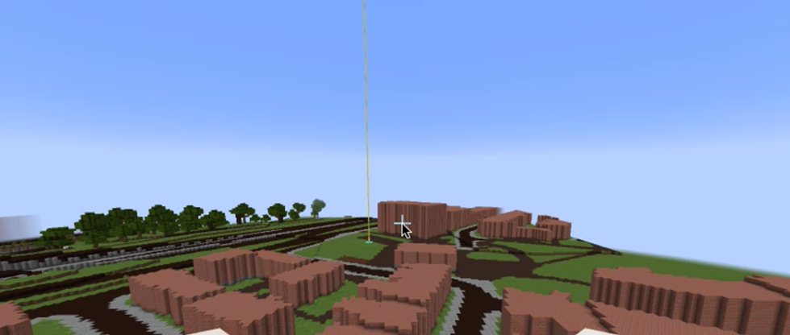
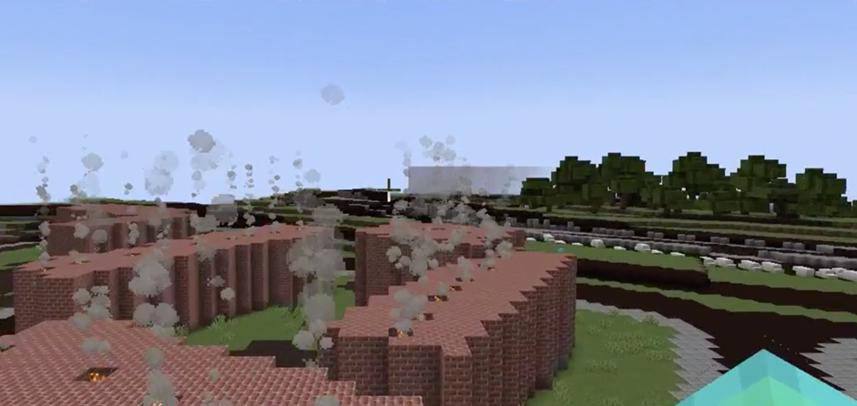
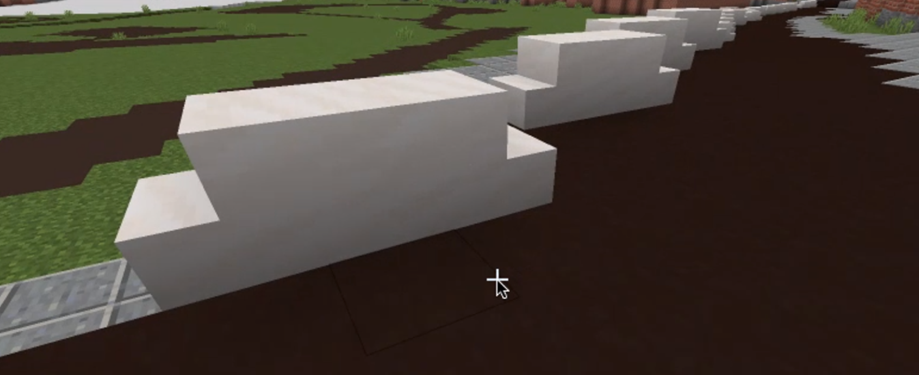
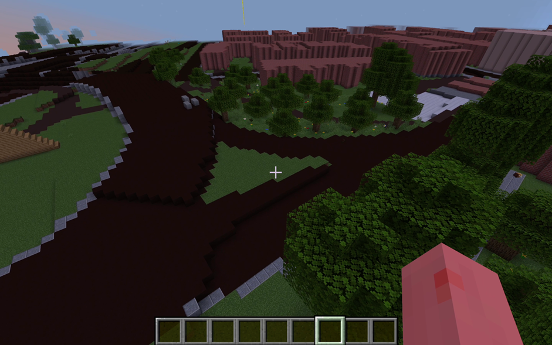
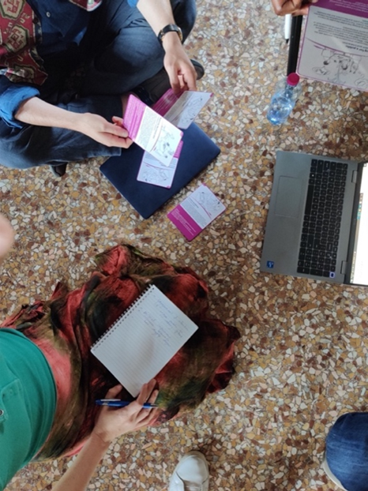
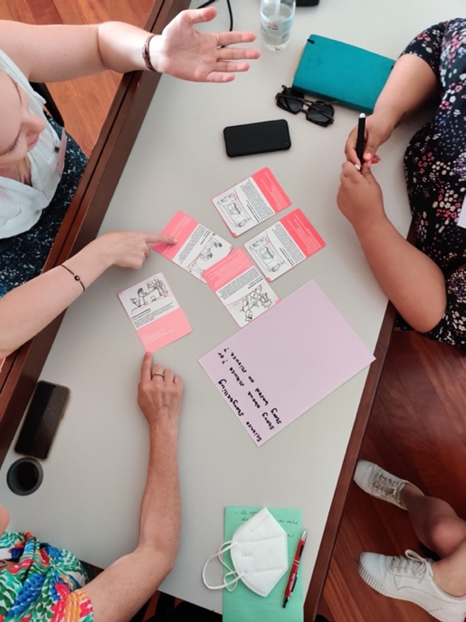
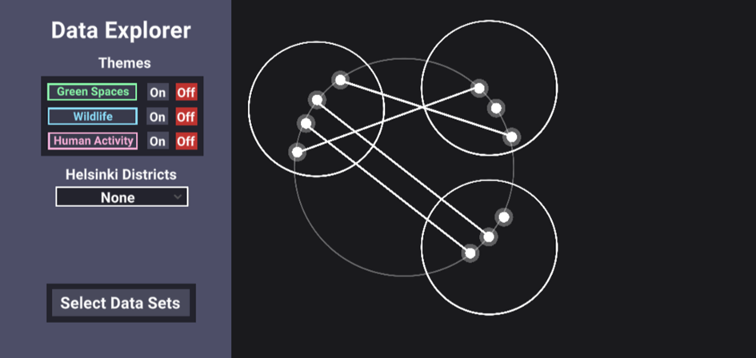
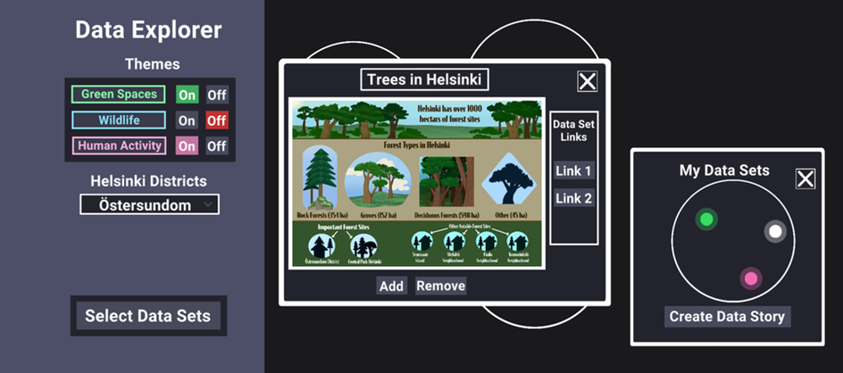
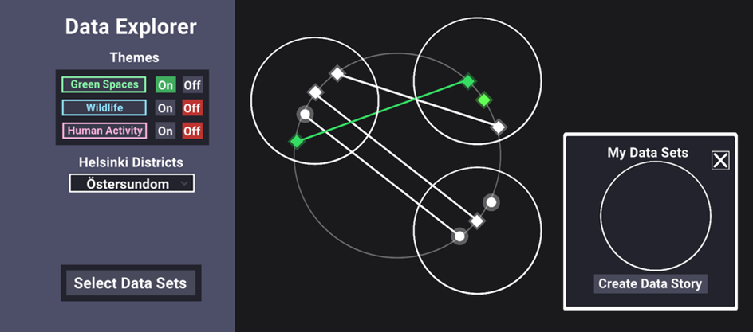

In this case study by Knowle West Media Centre (KWMC), young people had the chance to explore the data behind air pollution levels in their local neighbourhoods through Minecraft.
Grounded in their Bristol Approach, KWMC addresses complex issues in a people- and community-centred way by involving those with firsthand experiences in finding solutions. Although young people are affected by these complex problems, such as poor air quality, as well, it is not always evident to include them in the problem-solving process. To communicate, inform, and educate them about air pollution in St. Paul’s, KWMC cleverly incorporated a Minecraft game design into their Slow the Smoke project. Using a Minecraft server that reflects Bristol, attendees were instructed to avert air pollution in their neighbourhoods by intervening in and co-designing the digital environment.

Minecrafting Bristol
Working together with creative technologists and a local university, KWMC created a Minecraft world that reflects relevant neighbourhoods in Bristol. For this, they identified and included three zones based on their air pollution levels. To help players navigate the virtual world and find their neighbourhoods, colour-coded beams served as points of reference.
A coloured beacon that identifies one of the neighbourhoods.
Subsequently, data about air quality had to be gamified, this way, players knew when the air pollution levels escalated and that they needed to take action. Concretely, the sky reflected the air quality data, turning red when pollution was high and clearing up bright when low. Since Minecraft follows its own timeline and changes the colour of the sky accordingly, the designers added pop-up messages for the players to indicate the air quality values: showing the number, as well as whether it was high or low, with a prompt to take action. These pop-up messages could also be added manually by the facilitators, allowing them to respond to the actions (or inactions) of the players.
Engaging Youth
Three possible in-game actions impacted air quality data values. Players could put out fires, remove cars and plant trees. As they were playing in multiplayer mode, all of the actions of different players affected the air quality levels in the Minecraft world. Therefore, they were dependent on each other and encouraged to work together.
After each action was introduced by the facilitators and experimented with by the players, they had the chance to engage in discussions to reflect on what they did and to come up with better design solutions for transport, heating our homes and urban design. These discussions incited creativity among the players and guided their subsequent actions.



The three activities: 1) Putting out fires; 2) removing cars; and 3) planting trees.
While all the players enjoyed planting trees and creating forests, one player put solar panels on roofs after putting out the fires while another added bicycles after removing some of the cars. After doing so, someone started removing the bicycles, leading to a conversation about everyone doing their bit and an understanding of working collectively.
Likewise, when someone introduced animals, others jumped on the bandwagon and started farming, inspiring conversations about locally grown food vs transporting it from other areas. And when another player introduced bees and planted flowers, this triggered conversations about biodiversity and how bees and birds are also affected by poor air quality and a lack of bee-friendly fauna and flora.
“I learned we need to stop driving so much”
“Yes, I would play it again”
“I learned about air pollution”
The players who had more experience supported the newer players. A more experienced player introduced humans, who needed to be given homes and jobs to carry out – “otherwise they would start fires and cause havoc!” This added a lot of fun to the game and was a good way to inject jeopardy complications into the game.
“Fun”
Considerations for the Future
KWMC hoped for a higher attendance rate, so in order to increase the number of attendees, schools could be considered. Another potential solution could be to promote the game through STEM clubs.
To keep players engaged, it’s important to put them straight into the game. The game also has a lot of potential for teaching. To support team building and design activities, it’s a good idea to include a physical activity outside of the virtual room.
Although the game is currently set in a specific neighbourhood, it can also be transferred to other neighbourhoods in Bristol.
Challenges and Opportunities in Science Communication
The KU Leuven ParCos team and various Mintlab colleagues participated in the international and interdisciplinary VIU (Venice International University) graduate summer school on September 12-16, 2022, in San Servolo Venice. This year’s summer school was about science communication and its global challenges and opportunities in the Sustainable Development Goals (SDGs) era. The graduate seminars were led by several universities, namely: Venice Internation University (Italy), Stellenbosch University (South Africa), University of Padua (Italy), KU Leuven (Belgium), and Ca’Foscari University of Venice (Italy).
On the 14th of September, the ParCos team organized several activities such as lectures and participatory workshops. During one of these workshops, they introduced the ParCos Trainer Cards: a self-reflexive tool for the development and evaluation of science stories. The participating students were asked to use these Trainer Cards to evaluate or iterate the science story that they had developed in group during an earlier activity.


Experiences and Impressions of Mintlab’s participants
“Before attending the VIU seminar, my experiences with science communication were limited. By participating in the various interactive and informative workshops, especially in the courses on the core theories and models of science communication and scientific co-design, I have now discovered many points of convergence with my own research on menstrual self-tracking apps in the Chinese context. In particular, the seminar has enabled me to extend my current understanding of Chinese science communication and support more theory-driven science communication conceptualizations and research. I now feel confident to move from a mere public understanding of science communication, towards a combination of understanding and science participation.”
– Jiamin Li
“Thanks to VIU, I got the opportunity to think together with other, social and non-social scientists about the ways my PhD research can really matter to the societal stakeholders I’m working with. The offered courses by senior experts on science communication theory, its target groups and communication formats have enabled me to think about my research on sports betting mediatization beyond the lens of the academic publication, foregrounding the United Nations’ SDGs along the way.”
– Niels Bibert
The VIU graduate summer school was initiated by ParCos’ Horizon 2020 SWAF (Science with and for Society) partner QUEST. More information on both ParCos and Quest can be found on ParCos project & QUEST project. This blog is a slightly altered version of the original posted by Mintlab.
The Data Explorer is an online tool for science communication and citizen science developed by our ParCos researcher, Natasha Tylosky, during her research at LUT University. The idea behind the data explorer is to provide a platform that encourages users to connect different datasets between various fields.
The opening screen of The Data Explorer
Project Overview
Scientific data is not always accessible to a wide public. Even if data is open source, it can be difficult for people to access it. This is particularly the case when they lack a scientific or technical background. What’s more, non-scientists rarely get the opportunity to contribute to data that may be important to them or even directly related to them. When researchers are outsiders working with local communities, data accessibility and inclusivity are especially important.
Our researcher’s solution to this was to build the Data Explorer. This tool serves researchers in their pursuit to include non-experts in the research process. By introducing a novel way to combine and visualise various datasets chosen by scientific experts, the Data Explorer enables laypersons to interact with and curate different data sources and encourages them to add their own data stories to this interactive space.
What is the Data Explorer?
The Data Explorer is an online tool that allows the public to view and explore scientific datasets related to a particular topic. All of these datasets have been curated by a group of researchers. In the current prototype of the Data Explorer, all the datasets are related to biodiversity in Helsinki. Here, users can first familiarise themselves with these different datasets by viewing short, summarizing data comics. These comics illustrate the information that is present in a specific source. Secondly, they can click on a link to the actual dataset. This enables them to easily explore that dataset further by themselves. Finally, users can create and upload their own stories about the datasets in The Data Explorer. In so doing, they can bring their perspectives of the datasets into this interactive space.
For example, if you notice that the populations of both squirrels and bats are rising, you can write a story about why you think that is happening. Maybe there are more green spaces in Helsinki? Or maybe there is less pollution? It’s up to you to find out!
A data comic about trees in Helsinki in The Data Explorer
The Data Explorer uses a ‘constellation’ layout. A constellation in The Data Explorer centres around a general topic, in our prototype that topic is biodiversity in Helsinki. Likewise, each white point or ‘star’ represents a dataset, and every white circle represents a data story. Lines that connect different stars show if different data stories share a dataset. It is, moreover, possible to sort datasets by theme and location: stars that relate to a selected theme share the same colour, while stars relating to a selected location turn into a diamond.
The shape and colour of the ‘stars’ have changed based on the themes and location that have been selected in the side menu.
What makes this data visualization layout unique information-wise, is that it is possible to scale this constellation visualization in or out, to the micro or macro level, to display different related datasets. In future versions of the Data Explorer, different constellations could potentially centre around different connected topics. This way, the Data Explorer can serve to show relationships between diverse data types, even if they don’t have an immediate apparent connection. Put differently, it can help users identify new connections between different selected topics.
Future Evaluation & Iterations
The current version of the Data Explorer will be tested by a much wider audience. This test will include a control group, and there will be future releases of the Data Explorer as Natasha progresses with her research. The next goal of this project is to conduct an ‘in the wild’ study. A future version will thus be tested in a setting like a classroom or community centre.
Source
Tylosky Natasha. (2021). Parcos Data Explorer, Deliverable 6.2. of the Horizon 2020 project ParCos, EC grant agreement no 872500, Lappeenranta, Finland.
From September 2021 till January 2022, 17 students of Media and Information Design (LUCA School of Arts, campus Brussels, Belgium) created a wide range of participatory data stories on the topic of climate change. These third year Bachelor students were already trained at designing data visualisations, from creating non-fictional stories to shaping interaction design. For this assignment, they were asked to bring their design skills together. The process was guided by the ParCos Storyteller: a ParCos tool for guiding participation in data storytelling. Students were introduced to existing data stories that ranged from inviting the audience to interpret data and discover storyline(s) (see Figure 1 below, left), to participating in the story by contributing data, or even adding their own data story(line) (see Figure 1, right).
As part of the ParCos project VRT organised an inspiration session for young creatives and experienced media makers to think about new participatory ways of communicating science. On the 9th of May, 18 students of Media and Information Design from LUCA School of Arts visited the news department of VRT, the Flemish public broadcaster for a workshop with 6 creative media professionals. Together, they brainstormed about how current visual representations of science and data in a news context can be made more engaging.
This website uses cookies to improve your experience while you navigate through the website. Out of these cookies, the cookies that are categorized as necessary are stored on your browser as they are essential for the working of basic functionalities of the website. We also use third-party cookies that help us analyze and understand how you use this website. These cookies will be stored in your browser only with your consent. You also have the option to opt-out of these cookies. But opting out of some of these cookies may have an effect on your browsing experience. Read more at our cookie policy page.
Necessary cookies are absolutely essential for the website to function properly. This category only includes cookies that ensures basic functionalities and security features of the website. These cookies do not store any personal information.
Any cookies that may not be particularly necessary for the website to function and is used specifically to collect user personal data via analytics, ads, other embedded contents are termed as non-necessary cookies. It is mandatory to procure user consent prior to running these cookies on your website.